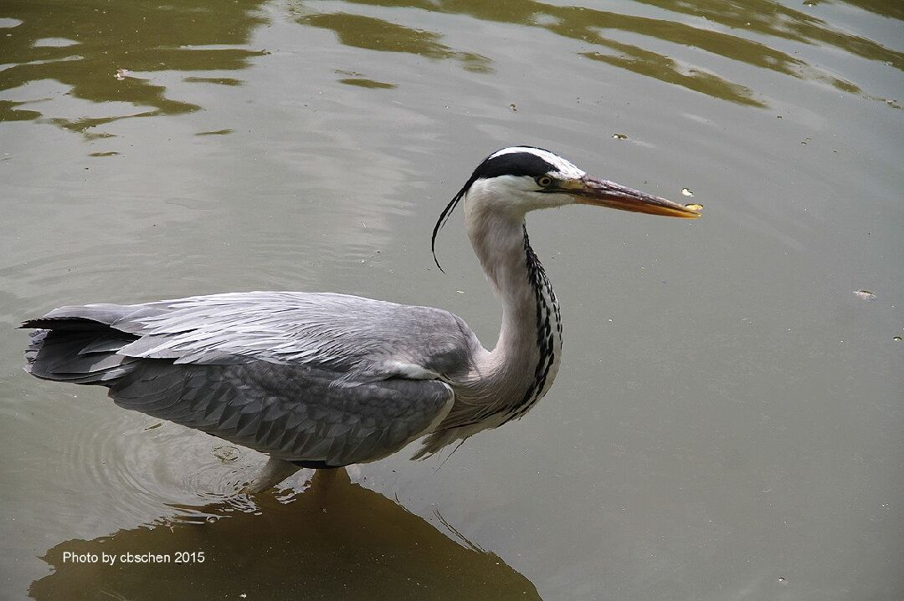
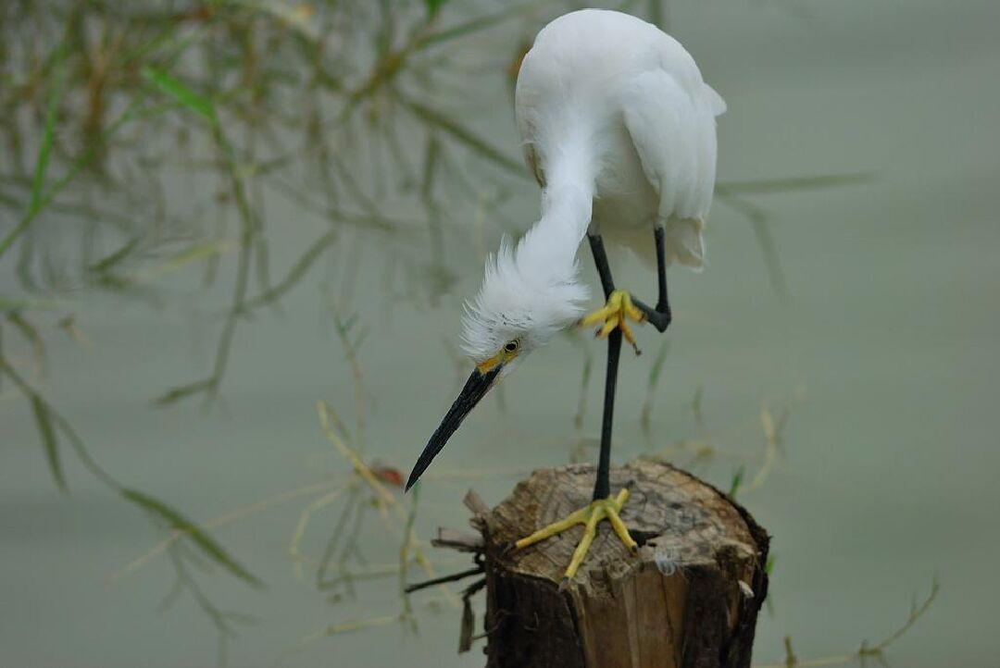
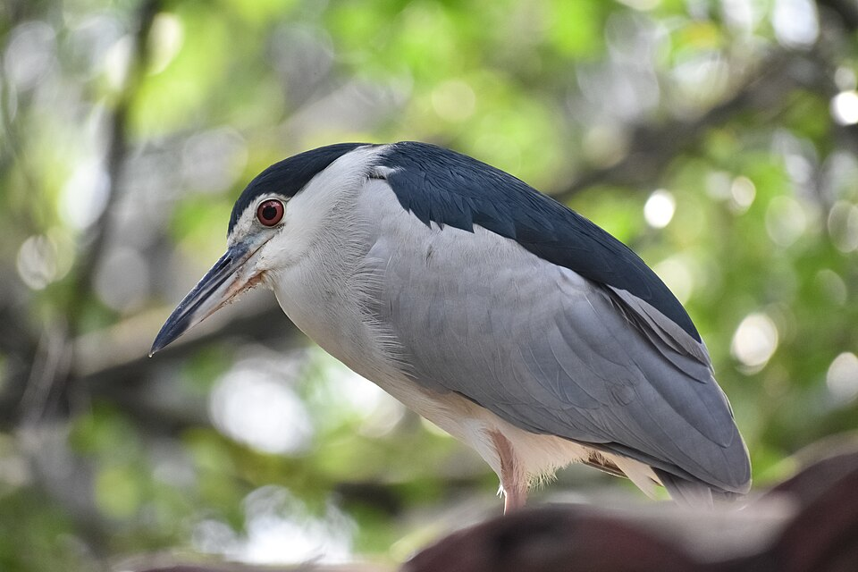
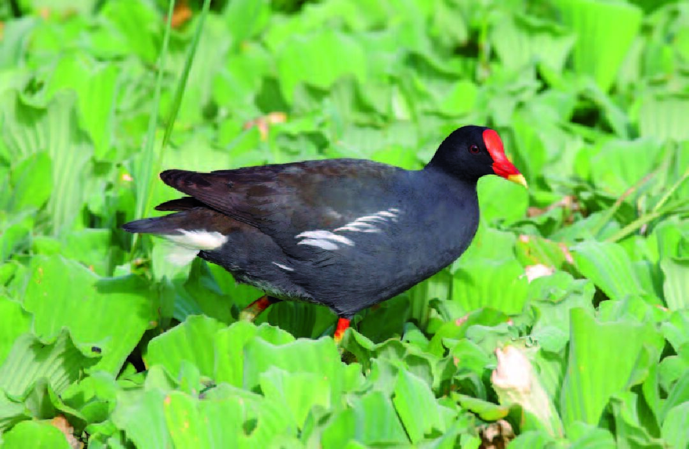

埤塘鳥類觀察名錄
霄裡大池由於得天獨厚擁有天然湧泉補給，整體水質常年維持在穩定水平，吸引了豐富的鷺科與水鳥生態。以下為實地田野調查中記錄到的核心鳥類成員：

蒼鷺
【點擊查看詳細介紹】
體型高大威猛，全體羽毛呈灰色。常長時間如雕像般靜立於大池淺水區等待小魚游過。

小白鷺
【點擊查看詳細介紹】
全身體羽潔白如雪，黑色的嘴喙，最顯著的特徵是其鮮黃色的腳趾。

大白鷺
【點擊查看詳細介紹】
體型明顯較小白鷺大上數倍，嘴喙呈黃色。其脖子線條極長且常彎曲成優美的 S 型。

夜鷺
【點擊查看詳細介紹】
俗稱「暗光鳥」。雙眼呈血紅色，頭頂有白色飾羽。晨昏與夜間活動最為活躍。

紅冠水雞
【點擊查看詳細介紹】
常見的留鳥，額頭有醒目的紅色，擅長在水草間游泳穿梭。

小鸊鷉
【點擊查看詳細介紹】
體型嬌小，是潛水高手，遇到危險時會迅速潛入水中躲避。